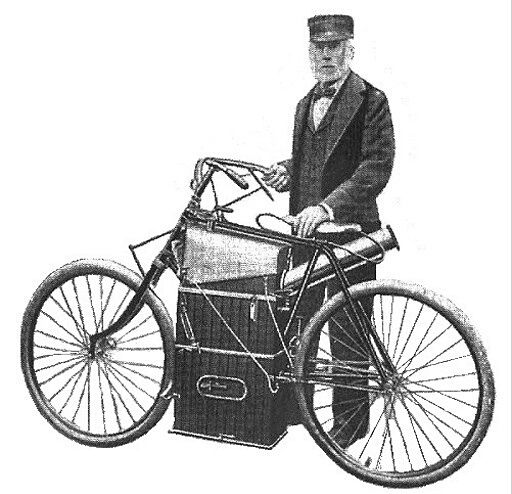
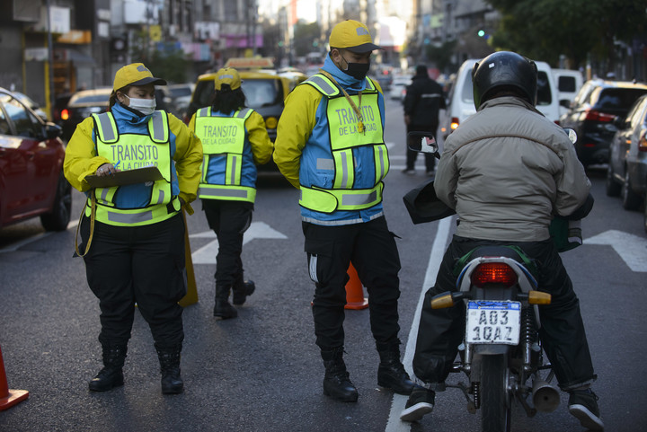
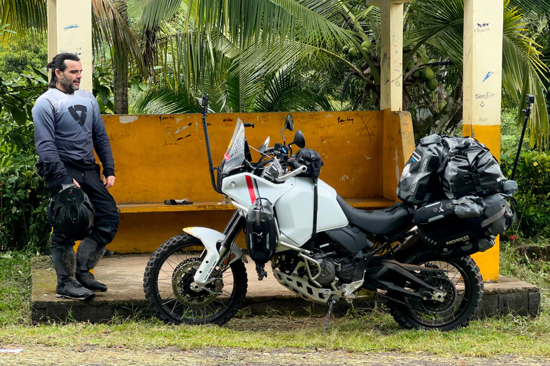
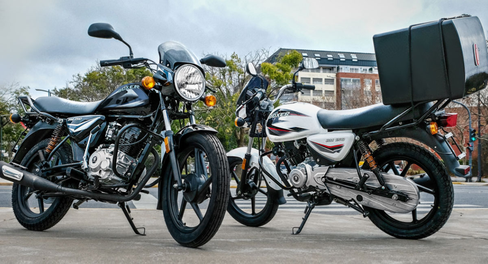

Curiosidades 🚦
La primera motocicleta
¿Quien la invento?
Para ver la primera motocicleta de la historia hay que remontarse hasta el año 1867, cuando el estadounidense Sylvester Howard Roper creó un motor de vapor con dos pistones de 164cc cada uno, que era accionado por carbón. Lo hizo en la ciudad de Springfield en plena guerra civil norteamericana.
Howard Roper falleció en el año 1886 mientras conducía su motocicleta a 64 km/h, tratando de romper el récord de velocidad sobre una motocicleta a vapor.
Tecnicas de manejo

Campo de vision
Cuando se conduce una moto es indispensable desarrollar la visión periférica. Los seres humanos tenemos un campo de visión de 180º; sin embargo, durante la actividad de la conducción, así como en momentos de ansiedad, nuestra atención se concentra en un punto muy concreto. A este fenómeno se lo que se conoce como “efecto túnel”.
La vulnerabilidad de los motociclistas hace indispensable que éstos sean capaces de tener un control global de lo que está pasando a su alrededor, debido a que, en caso de tener un accidente, las probabilidades de sufrir graves lesiones son muy elevadas.
Requisitos para circular
En Buenos Aires Argentina Capital Federal los agentes de transito tienen muchas Responsabilidades para mejorar la circulacion y hacer cumplir correctamente las normas.
- Colaborar en el ordenamiento del tránsito público, cumpliendo una función educativa, informativa, preventiva de control y labrando actas de comprobación.
- Realizar los controles y pruebas de alcoholemia y toxicológica establecido en el Código de Tránsito y Transporte y su reglamentación a los conductores de cualquier tipo o clase de vehículos que transiten por la vía pública.
- Instalar señales de tránsito circunstanciales en la vía pública, en caso de emergencias o sin autorización previa.
- Planificar, organizar y ejecutar los operativos y controles en la vía pública.
Motoviajeros
Viajes
El mototurismo o motoaventura es un formato de turismo que reúne la aventura, destreza y la convivencia, dentro de un marco de desafío personal, con la libertad y la diversidad lleva a una persona a lo largo de las rutas que son menos tráfico con destino que llevan a las puertas de los castillos, a las orillas de los lagos, a la entrada de los bosques o en los pies de los picos más hermosos con la filosofía y la cultura de la motocicleta.
Indumentaria y Equipamento

Ir
Conoce todo el equipamento e indumentaria que necesitas para estar protegido y proteger tu moto.

Top 5 de las mejores motos de trabajo
Ver
Conoce las 5 mejores motos de trabajo y las mas recomendadas en este 2024